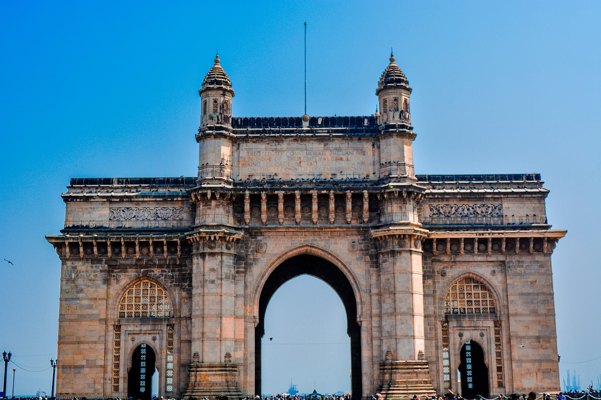

1.Taj Mahal

The Taj Mahal, an iconic marvel of architecture, stands as a timeless
testament to love and artistic brilliance. Located in the historic city
of Agra, India, this majestic mausoleum was commissioned by the Mughal
Emperor Shah Jahan in 1632 as a memorial for his beloved wife, Mumtaz
Mahal. For over two decades, thousands of skilled artisans and craftsmen
toiled tirelessly to bring the Emperor's vision to life. The Taj Mahal's
ethereal beauty lies in its exquisite white marble construction,
radiating a soft glow that changes hues with the shifting sunlight. Its
central dome soars gracefully into the sky, surrounded by four elegant
minarets that accentuate the structure's symmetry. The meticulously
detailed inlay work adorning the walls, featuring delicate floral motifs
and intricate calligraphy from the Quran, speaks volumes about the
artistry of that era. The monument stands on a raised platform,
surrounded by symmetrical gardens and reflecting pools that add to its
serene ambiance. Declared a UNESCO World Heritage Site in 1983, the Taj
Mahal continues to captivate millions of visitors with its romantic
allure, architectural finesse, and profound historical significance.
2.Hampi
Hampi, a UNESCO World Heritage Site located in the Indian state of
Karnataka, is a treasure trove of history and architectural splendor.
This ancient city was once the capital of the mighty Vijayanagara
Empire, flourishing during the 14th to 16th centuries. Today, Hampi
stands as a remarkable archaeological site, offering visitors a glimpse
into the grandeur of its glorious past. The landscape is adorned with
magnificent temples, royal pavilions, palaces, and other structures,
showcasing the architectural brilliance and artistic finesse of the
Vijayanagara period. The Virupaksha Temple, dedicated to Lord Shiva, is
an imposing structure with intricate carvings and a towering gopuram
that dominates the skyline. The Vittala Temple, famous for its stone
chariot and musical pillars, is a testament to the engineering marvels
of ancient India. The Hampi Bazaar and the Queen's Bath provide glimpses
into the city's bustling market and the luxurious lifestyle of the
royals. Surrounded by rugged boulder-strewn hills and the Tungabhadra
River flowing through, Hampi offers not only a historical journey but
also a mesmerizing natural landscape. Exploring the ruins of Hampi is
like stepping back in time, where history, mythology, and art come
together, leaving visitors awestruck and inspired by the grandeur of
this once-great city.
3.Fatehpur Sikri

Fatehpur Sikri, a magnificent fortified city located near Agra, India,
is a historical marvel that exudes the grandeur of the Mughal era. Built
during the reign of Emperor Akbar in the late 16th century, Fatehpur
Sikri served as the capital of the Mughal Empire for a short but
significant period. The city's architectural brilliance is a fusion of
Persian, Indian, and Islamic styles, creating a unique and awe-inspiring
complex. The imposing Buland Darwaza, also known as the Gate of Victory,
stands tall as a symbol of Akbar's conquests and religious tolerance.
The Jama Masjid, one of the largest mosques in India, showcases
intricate marble work and intricate carvings. The magnificent Panch
Mahal, an elegant five-story palace, and the royal residences like
Diwan-i-Khas and Diwan-i-Aam leave visitors mesmerized with their
splendor. Fatehpur Sikri is also home to the tomb of the revered Sufi
saint, Sheikh Salim Chishti, which draws pilgrims and visitors seeking
blessings. Despite being abandoned due to water scarcity, the deserted
red sandstone buildings of Fatehpur Sikri stand as a testament to the
artistic and cultural heights achieved during the Mughal reign, offering
an unforgettable journey through India's rich history.
4.Gateway of India

The Gateway of India, an iconic monument situated in Mumbai, India, is a symbol of historical significance and architectural brilliance. Constructed during the British colonial era, the Gateway of India was completed in 1924 and served as the ceremonial entrance to India for prominent visitors. The monument stands tall at the waterfront of Mumbai Harbor, overlooking the Arabian Sea, creating a mesmerizing sight for both locals and tourists alike. Its design showcases a harmonious blend of Indo-Saracenic and Muslim architectural styles, featuring intricate latticework, ornamental domes, and basalt arches. The grandeur of the Gateway of India is further enhanced by its massive proportions and the four turrets that rise gracefully into the sky. Over the years, the monument has witnessed numerous historical events and served as a backdrop for significant public gatherings. Today, it continues to be a popular tourist attraction and a bustling gathering spot, offering a spectacular view of the sea and serving as a reminder of Mumbai's rich cultural heritage and colonial past.